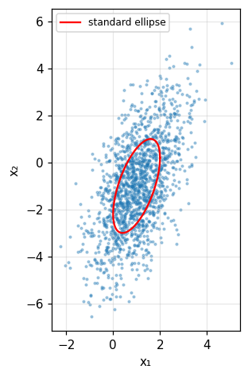
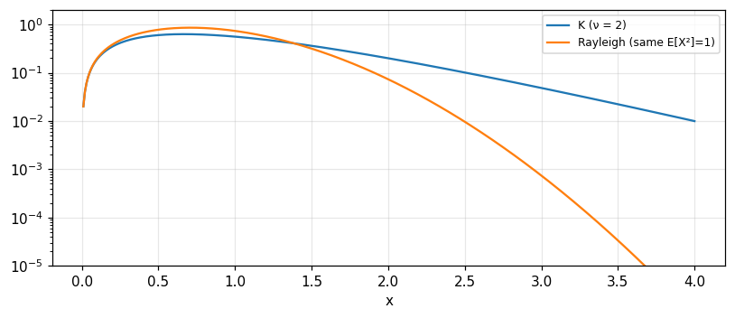

The distributions that arise in practice
Bernoulli, binomial, geometric, Pascal, hypergeometric, Poisson, uniform, normal, exponential, gamma, beta, chi-square, Rayleigh, Rice, Maxwell, Nakagami, Student, Cauchy, multivariate Gaussian, Weibull, log-normal and K.
Lecture (slides) Hands-on with the Jupyter Notebook Self-check quiz
Lecture (slides)
The distributions that arise in practice
- Recognise which distribution models which situation: counting successes, waiting times, sums of many noises, signal amplitudes, multipath fading.
- Compute the mean, variance and characteristic function of each distribution and check them two ways.
- Use the error function and the Q function for normal probabilities; use the central limit for binomial and Poisson.
- Build the chain of relations: Gaussian → chi-square → Rayleigh, Rice, Maxwell; Rayleigh ≡ Weibull b=2; gamma × Rayleigh → K.
- Work with the bivariate Gaussian: conditionals, the standard ellipse, independence from uncorrelatedness.
Use the buttons, the dots or the ← → keys to move between slides.
Discrete distributions
- Bernoulli, binomial, multinomial
- Geometric, Pascal, hypergeometric
- Poisson and the limit of the binomial
A map of the chapter
Chapter 1 defined probability, random variables and moments; chapter 2 studies the distributions frequently encountered in applications such as radar and communications, in general form with some detail for particular applications (Barkat, section 2.1, p. 75). Section 2.2 covers discrete distributions, 2.3 continuous ones, and 2.4 special distributions: multivariate, Weibull, log-normal, K and the generalised compound.
Bernoulli and binomial
A Bernoulli trial has two outcomes: success (1) with probability p, failure (0) with q=1-p. The probability of exactly k successes in n independent trials is the binomial \binom nk p^kq^{n-k}; mean np, variance npq, characteristic function (pe^{j\omega}+q)^n (Barkat, section 2.2.1, pp. 75 to 77). Example 2.1: rolling a die 10 times, a six exactly twice: 0.2907. Measured: E = 1.6667 and variance 1.3889.
Example 2.2: a majority decision
The receiver takes three symbols and decides by majority; each decision is correct with probability 0.8. The probability of a correct decision is P(D=2)+P(D=3)=3(0.8)^2(0.2)+(0.8)^3 = 0.896 (pp. 77 to 78). The binomial formula, the mass function and simulation agree. This is the first example of how processing several observations improves reliability, the core idea of signal detection.
The multinomial distribution
If each trial has k exclusive outcomes with probabilities P_1,\ldots,P_k the probability of n_i occurrences of outcome i is \dfrac{n!}{n_1!\cdots n_k!}P_1^{n_1}\cdots P_k^{n_k} (p. 78). The X_i are not independent since \sum n_i=n. Measured: n=10, probabilities (0.2,0.3,0.5), counts (2,3,5): 0.0851.
Geometric and Pascal
If we repeat until an event A first occurs at trial k: geometric P(X=k)=q^{k-1}p, E[X]=1/p, \operatorname{var}=q/p^2, moment generating function p/(1-qe^t) (Barkat, section 2.2.2, pp. 78 to 80). Stopping at the rth occurrence: Pascal (negative binomial) P(X=k)=\binom{k-1}{r-1}p^rq^{k-r} (pp. 80 to 82), E=r/p, \operatorname{var}=rq/p^2; r=1 gives the geometric. Measured: die, first six at the third roll: 0.1157; E = 6 and variance 30; Pascal r=3, p=0.5, k=5: 0.1875.
Binomial versus Pascal
If X is binomial (successes in n trials) and Y Pascal (trials to get r successes) then P(X\ge r)=P(Y\le n): at least r successes in the first n trials if and only if at most n trials are needed for r successes; likewise P(X<r)=P(Y>n) (p. 82). Measured with n=10, r=3, p=0.3: 0.6172 on both sides.
Hypergeometric: sampling without replacement
An urn has N balls, r white. Drawing n with replacement gives a binomial count of whites. Without replacement, P(X=k)=\binom rk\binom{N-r}{n-k}/\binom Nn, k\le\min(n,r), mean nr/N=np and variance npq\,\dfrac{N-n}{N-1} (Barkat, section 2.2.3, pp. 82 to 84). Example 2.3: 5 white, 3 black, 3 red, exactly 3 whites after 7 draws without replacement: 0.4545 =5/11; variance 0.6942. As N\to\infty it tends to the binomial: with N=10000, r=3000, n=10, k=3 the two distributions differ by only 1.3e-04.
The Poisson distribution
The number of events in a period t, when intervals are independent and the probability does not depend on the starting point: P(X=k)=e^{-\lambda}\lambda^k/k! (Barkat, section 2.2.4, pp. 85 to 86). Examples: telephone traffic, equipment failures, radioactive decay. Mean and variance both equal \lambda, E[X^2]=\lambda^2+\lambda, characteristic function \exp[\lambda(e^{j\omega}-1)]. Measured with \lambda=3: E[X^2] = 12. Example 2.4: the sum of two independent Poissons is Poisson with \lambda_1+\lambda_2; at 5 with \lambda=2,3 we get 0.1755, equal to P(5) of the Poisson with parameter 5.
Poisson as the limit of the binomial
When n\to\infty with p=\lambda/n small: \binom nk p^k(1-p)^{n-k}\to e^{-\lambda}\lambda^k/k!, using (1-\lambda/n)^n\to e^{-\lambda} and n(n-1)\cdots(n-k+1)/n^k\to1 (pp. 87 to 88). The hypergeometric tends to the binomial and then to the Poisson. Measured: n=1000, p=0.003, k=2: binomial 0.2242, Poisson \lambda=3 0.224; difference 1.1e-04.
Self-check, part 1
- What is the difference between binomial and Pascal?
- When is the hypergeometric close to the binomial?
- Why does the Poisson have mean equal to variance?
Hints: the binomial fixes n, the Pascal fixes r; when N\gg n; because it is the limit of np and npq with q\to1.
Basic continuous distributions: uniform, normal, exponential, gamma, beta
- Uniform and normal: error function, Q
- The central limit for binomial and Poisson
- Exponential, Laplace, gamma, beta
The uniform distribution
f_X=\frac1{b-a} on [a,b]; F_X=(x-a)/(b-a); mean \tfrac12(a+b), variance \tfrac1{12}(b-a)^2, characteristic function (e^{j\omega b}-e^{j\omega a})/[j\omega(b-a)] (Barkat, section 2.3.1, pp. 88 to 89). For [2,8]: variance 3, checked by numerical integration. The characteristic function is a phase-shifted sinc: Bracewell's familiar form.
The normal distribution
f_X=\dfrac1{\sqrt{2\pi}\sigma}\exp\!\left[-\dfrac{(x-m)^2}{2\sigma^2}\right]; characteristic function \exp(jm\omega-\sigma^2\omega^2/2); the even moments of a zero-mean variable are n!\sigma^n/[(n/2)!2^{n/2}], the odd ones vanish (Barkat, section 2.3.2, pp. 89 to 93). Standard N(0,1): E[X^4] = 3 =3. The peak of the density is 1/(\sqrt{2\pi}\sigma), and at m\pm\sigma the density is 0.607 of the peak (Fig. 2.3).
The error function and the Q function
\text{erf}(x)=\frac2{\sqrt\pi}\int_0^xe^{-u^2}du; F_X(x)=\tfrac12+\tfrac12\text{erf}\!\left(\frac{x-m}{\sqrt2\sigma}\right); Q(x)=\frac1{\sqrt{2\pi}}\int_x^\infty e^{-u^2/2}du=\tfrac12\text{erfc}(x/\sqrt2); Q(0)=\tfrac12, Q(-x)=1-Q(x), and Q(x)\approx\frac1{x\sqrt{2\pi}}e^{-x^2/2} for x>4 (pp. 91 to 92). Example 2.5: Y\sim N(3,4): P(Y>4) = 0.3085; P(2<Y<5) = 0.5328. At x=4: Q(4) = 3.167e-05 while the approximation gives 3.346e-05.
The central limit theorem
For i.i.d. X_1,X_2,\ldots the sum S_n has density equal to the convolution f_{X_1}*\cdots*f_{X_n} tending to a normal with mean \sum m_k and variance \sum\sigma_k^2; the normalised \sum(X_k-m_k)/\sigma tends to N(0,1) (Barkat, p. 95). It holds for all distributions; here binomial, U=(X-np)/\sqrt{npq}, and Poisson, (X-\lambda)/\sqrt\lambda (pp. 95 to 96). This is Bracewell's result (modules 8 and 10) in probability language.
Problems 2.11 and 2.12: the central limit in practice
Problem 2.11 (p. 138): throw two dice 200 times, success is a sum of 7 (p=1/6); the probability of success at least 20 percent of the time (from 40): exact 0.1223, normal approximation (with continuity correction) 0.121. Problem 2.12: the sum of 100 Poisson variables with \lambda=0.032 is Poisson with \lambda=3.2; P(S>5) exact 0.1054, normal approximation (with correction) 0.0993: fair for the binomial but worse when \lambda is small.
The exponential and Laplace distributions
Exponential: f_X=\alpha e^{-\alpha x}, x\ge0; mean \beta=1/\alpha, variance \beta^2, characteristic function (1-j\beta\omega)^{-1} (Barkat, section 2.3.3, pp. 96 to 97). The memoryless property (problem 2.7): P(X\ge x_1+x_2\mid X>x_1)=P(X\ge x_2): with \alpha=2, x_1=0.5, x_2=0.7 both sides equal 0.2466. Laplace: f_X=\frac\alpha2e^{-\alpha|x|}, characteristic function e^{-jm\omega}/(1+\lambda^2\omega^2), variance 2 for \alpha=1 (pp. 97 to 98). These are the distributions of module 10 (Bracewell).
The gamma distribution
The gamma function \Gamma(\alpha)=\int_0^\infty x^{\alpha-1}e^{-x}dx=(\alpha-1)\Gamma(\alpha-1), \Gamma(n)=(n-1)!, \Gamma(\tfrac12)=\sqrt\pi = 1.7725. The gamma distribution G(\alpha,\beta): f_X=\dfrac{x^{\alpha-1}e^{-x/\beta}}{\Gamma(\alpha)\beta^\alpha}; mean \alpha\beta, variance \alpha\beta^2, characteristic function (1-j\beta\omega)^{-\alpha} (Barkat, section 2.3.4, pp. 98 to 100). With \alpha=3, \beta=2: mean 6, variance 12. This is Bracewell's Pearson III: the sum of \alpha exponential variables.
The beta distribution
The beta function B(\alpha,\beta)=\int_0^1u^{\alpha-1}(1-u)^{\beta-1}du=\Gamma(\alpha)\Gamma(\beta)/\Gamma(\alpha+\beta) (Barkat, p. 100). The beta distribution on (0,1): f_X=x^{\alpha-1}(1-x)^{\beta-1}/B(\alpha,\beta), mean \alpha/(\alpha+\beta), variance \alpha\beta/[(\alpha+\beta)^2(\alpha+\beta+1)] (pp. 100 to 101). With \alpha=2, \beta=5: mean 0.2857, variance 0.0255, checked by integration and simulation.
Self-check, part 2
- How is Q(x) related to \text{erfc}?
- Why is the exponential distribution "memoryless"?
- What are the mean and variance of G(\alpha,\beta)?
Hints: Q(x)=\tfrac12\text{erfc}(x/\sqrt2); the residual probability after x_1 has the same form; \alpha\beta and \alpha\beta^2.
From Gaussian to chi-square, Rayleigh, Rice and Maxwell
- Chi-square and noncentral chi-square
- Rayleigh, Rice, Maxwell
- Nakagami, Student, F, Cauchy
The chi-square distribution
If X_1,\ldots,X_n are independent N(0,\sigma^2) then X=\sum X_i^2 is chi-square with n degrees of freedom; it is a gamma with \alpha=n/2, \beta=2\sigma^2 (Barkat, section 2.3.5, pp. 101 to 106). With \sigma=1: mean n, variance 2n. Measured for n=4: mean 4 and variance 8 by simulation and by the gamma G(2,2).
The noncentral chi-square
If the X_i have means m_i\ne0, X=\sum X_i^2 is noncentral chi-square with noncentrality parameter \lambda=\sum m_i^2; mean n\sigma^2+\lambda, variance 2n\sigma^4+4\sigma^2\lambda; the distribution function is expressed by the generalised Marcum Q function, F_X(x)=1-Q_m(\sqrt\lambda/\sigma,\sqrt x/\sigma) with m=n/2 (pp. 102 to 106). Measured for n=3, \sigma=1, \lambda=5: mean 8 and variance 26.
The Rayleigh distribution
If X_1,X_2 are independent N(0,\sigma^2) then X=X_1^2+X_2^2 is chi-square with 2 degrees and Y=\sqrt X is Rayleigh: f_Y=\frac y{\sigma^2}e^{-y^2/2\sigma^2}, F_Y=1-e^{-y^2/2\sigma^2}, mean \sigma\sqrt{\pi/2}, variance (2-\pi/2)\sigma^2 (Barkat, section 2.3.6, pp. 106 to 108). With \sigma=1: mean 1.2533, variance 0.4292, F(\sigma) = 0.3935 (Fig. 2.9). Example: Y=a+bX^2 with X Rayleigh has variance 4b^2\sigma^4; b=2, \sigma=1: 16.
Deriving Rayleigh with polar coordinates
F_X(x)=P(X_1^2+X_2^2\le x^2)=\frac1{2\pi\sigma^2}\int_0^{2\pi}d\theta\int_0^xre^{-r^2/2\sigma^2}dr=1-e^{-x^2/2\sigma^2}, whose derivative gives f_X=\frac x{\sigma^2}e^{-x^2/2\sigma^2} (pp. 108 to 110). It agrees with the fundamental theorem of chapter 1. Measured: P(R\le2) by the polar integral = 0.8647 = 1-e^{-2} and by simulation.
The Rice distribution
If X_1,X_2 have means m_1,m_2 (signal) and variance \sigma^2 (noise), R=\sqrt{X_1^2+X_2^2} is Rice: f_R=\frac r{\sigma^2}e^{-(r^2+\lambda)/2\sigma^2}I_0(\sqrt\lambda r/\sigma^2), \lambda=m_1^2+m_2^2, F_R=1-Q_1(\sqrt\lambda/\sigma,r/\sigma); \lambda=0 gives Rayleigh (pp. 111 to 113). Measured with m_1=m_2=1, \sigma=1: F_R(2) = 0.6057 by the Marcum function (through noncentral chi-square), by integrating the Rice density and by simulation; the mean of R = 1.8129.
The Maxwell distribution
Three N(0,\sigma^2) variables: Y=\sqrt{X_1^2+X_2^2+X_3^2} is Maxwell, f_Y=\frac1{\sigma^3}\sqrt{\tfrac2\pi}\,y^2e^{-y^2/2\sigma^2}, mean 2\sigma\sqrt{2/\pi}, variance \sigma^2(3-8/\pi) (pp. 113 to 114). With \sigma=1: mean 1.5958, variance 0.4535. Generalising to n variables with arbitrary means gives the noncentral chi-square, with Rayleigh, Rice and Maxwell as special cases.
The Nakagami m-distribution
In communications the Nakagami distribution describes the statistics of signals through multipath fading channels: f_X=\frac2{\Gamma(m)}\left(\frac mv\right)^mx^{2m-1}e^{-mx^2/v} with v=E[X^2] and m=v^2/E[(X^2-v)^2]\ge\tfrac12 the "fading figure" (Barkat, section 2.3.7, p. 115); m=1 gives Rayleigh. Measured: a simulation with m=2, v=1 gives 2 when m is estimated from moments, and E[X^2] = 1; the numerical integral of the density is 1.
Student's t and the F distribution
T=X/\sqrt{Y/n} with independent X\sim N(0,1), Y\sim\chi^2_n is Student's t with n degrees: f_T=\dfrac{\Gamma(\frac{n+1}2)}{\sqrt{n\pi}\Gamma(n/2)}(1+t^2/n)^{-(n+1)/2}; mean 0, variance n/(n-2) for n>2 (pp. 115 to 117). F=(Y_1/n_1)/(Y_2/n_2) is the ratio of two normalised chi-squares, with mean n_2/(n_2-2) (pp. 117 to 120). Measured: t with n=5: variance 1.6667; F with (4,10) degrees: mean 1.25; t with n=1: P(|T|<1) = 0.5, which is the Cauchy.
Cauchy: no mean
f_X=\dfrac{\beta}{\pi[\beta^2+(x-\alpha)^2]}, C(\alpha,\beta): the mean (principal value) is \alpha but the variance and higher moments do not exist; the moment generating function does not exist, the characteristic function is e^{j\alpha\omega-\beta|\omega|}; the sum of Cauchy variables is Cauchy with \alpha and \beta adding (Barkat, section 2.3.9, pp. 120 to 121). Consequence: the sample mean of n Cauchy variables has the same distribution as one variable and does not converge, contrary to the law of large numbers. Measured: P(|\bar X_n|<1) = 0.5 for n=1 and 0.5 for n=100; for a standard normal n=100 gives 1. The sum of two C(0,1) is C(0,2): P(|X|<2) = 0.5.
Self-check, part 3
- When is the amplitude Rayleigh and when Rice?
- Chi-square with n degrees is which special gamma?
- Why does the law of large numbers not apply to the Cauchy?
Hints: Rayleigh with noise only, Rice with a signal; \alpha=n/2, \beta=2\sigma^2; because there is no finite mean (E|X| is infinite).
Multivariate Gaussian and special distributions
- Bivariate and multivariate Gaussian
- Weibull and log-normal
- The K distribution and the generalised compound
The bivariate Gaussian
f_{X_1X_2}=\dfrac1{2\pi\sigma_1\sigma_2\sqrt{1-\rho^2}}\exp\!\Big\{-\dfrac1{2(1-\rho^2)}\Big[\dfrac{(x_1-m_1)^2}{\sigma_1^2}+\dfrac{(x_2-m_2)^2}{\sigma_2^2}-2\rho\dfrac{(x_1-m_1)(x_2-m_2)}{\sigma_1\sigma_2}\Big]\Big\} (Barkat, section 2.4.1, pp. 121 to 122). The marginals are normal, and the conditional f(x_2\mid x_1) is also normal with mean m_2+\rho\frac{\sigma_2}{\sigma_1}(x_1-m_1) and variance \sigma_2^2(1-\rho^2). Measured: m=(1,-1), \sigma=(1,2), \rho=0.6, for x_1=2: conditional mean 0.2, conditional variance 2.56, by formula and by conditional simulation.
The characteristic function and matrix form
With the covariance matrix C=\begin{pmatrix}\sigma_1^2&\rho\sigma_1\sigma_2\\\rho\sigma_1\sigma_2&\sigma_2^2\end{pmatrix}, |C|=\sigma_1^2\sigma_2^2(1-\rho^2), the density is \dfrac1{2\pi\sqrt{|C|}}\exp[-\tfrac12(\mathbf x-\mathbf m)^TC^{-1}(\mathbf x-\mathbf m)] and the characteristic function \exp(-\tfrac12\boldsymbol\omega^TC\boldsymbol\omega+j\mathbf m^T\boldsymbol\omega) (pp. 123 to 124); the n-dimensional forms are (2.236), (2.237) (p. 127). Measured with the C above: |C| = 2.56; the density at the centre is 0.0995 by the scalar formula and by the matrix formula.
Uncorrelated means independent (for Gaussians only)
When \rho=0 the joint density factors into the product of the marginals, so X_1,X_2 are independent, and the joint characteristic function equals the product of the marginals. This is an important characteristic of Gaussian variables: uncorrelated implies independent; a diagonal covariance matrix is necessary and sufficient (pp. 124, 127). Contrast module 10 (the half-disc: \rho=0 yet dependent). Measured: with \rho=0 the largest deviation between the joint density and the product of the marginals is 3e-17.
The standard ellipse and rotation
Setting the bracket in the exponent equal to 1 gives the standard ellipse centred at (m_1,m_2) (Fig. 2.16). Regard X_1,X_2 as a rotation by angle \theta of independent U,V: \sigma_1^2=\sigma_u^2\cos^2\theta+\sigma_v^2\sin^2\theta, \sigma_2^2=\sigma_u^2\sin^2\theta+\sigma_v^2\cos^2\theta, E[X_1X_2]=(\sigma_u^2-\sigma_v^2)\sin\theta\cos\theta and \theta=\tfrac12\arctan\dfrac{2\rho\sigma_1\sigma_2}{\sigma_1^2-\sigma_2^2} (pp. 124 to 126). With \sigma=(1,2), \rho=0.6: \theta = -19.33 degrees, \sigma_u^2 = 0.579, \sigma_v^2 = 4.421, and these are exactly the eigenvalues of C (computed by eigendecomposition).

The Weibull distribution
f_X=abx^{b-1}e^{-ax^b}, x>0, with a the scale and b the shape parameter; F_X=1-e^{-ax^b}; E[X]=a^{-1/b}\Gamma(1+1/b), \operatorname{var}=a^{-2/b}[\Gamma(1+2/b)-\Gamma^2(1+1/b)] (Barkat, section 2.4.2, pp. 129 to 131). b=1 gives the exponential, b=2 the Rayleigh with a=1/2\sigma^2. Measured: b=2, a=\tfrac12: mean 1.2533, equal to the Rayleigh \sigma\sqrt{\pi/2}; b=3, a=1: mean 0.893, variance 0.1053.
The log-normal distribution
\ln X is normal: f_X=\dfrac1{\sqrt{2\pi}\sigma x}\exp\!\left[-\dfrac{\ln^2(x/x_m)}{2\sigma^2}\right] with x_m the median (Barkat, section 2.4.3, pp. 131 to 132). Mean x_me^{\sigma^2/2}, variance x_m^2e^{\sigma^2}(e^{\sigma^2}-1), E[X^k]=x_m^ke^{k^2\sigma^2/2}; the mean-to-median ratio is \rho=e^{\sigma^2/2}. With x_m=1, \sigma=0.5: mean 1.1331, variance 0.3647.
The K distribution: speckle times texture
The K distribution arose to model radar sea clutter: f_X=\dfrac4{b\Gamma(\nu)}\left(\dfrac xb\right)^\nu K_{\nu-1}\!\left(\dfrac{2x}b\right), x\ge0, K_\nu the modified Bessel function, b the scale and \nu the shape parameter (Barkat, section 2.4.4, pp. 132 to 135). It results from X=ST: S Rayleigh speckle f_S=2se^{-s^2} and T texture with f_T=\frac2{b^\nu\Gamma(\nu)}t^{2\nu-1}e^{-t^2/b^2}, computed from f_X=\int f_{X|T}(x|t)f_T(t)dt with f_{X|T}=\frac{2x}{t^2}e^{-x^2/t^2}. With b=1, \nu=2: f_X(1) = 0.5595 by the compound integral and by the Bessel formula; E[X^2]=\nu b^2 = 2, checked by simulation.

The generalised compound and what it means
The K distribution is one example of a compound distribution: a parameter of the base distribution (Rayleigh) is itself random (gamma). Barkat presents a generalised compound for non-Gaussian radar clutter models (section 2.4.5, pp. 135 to 136), from work on high-resolution clutter statistics (Anastassopoulos et al., 1999). Meaning: when the scale of the background clutter, e.g. sea scatter, varies slowly, a fixed detection threshold is wrong; this is why adaptive CFAR thresholds are used in modules 25 and 26.
Self-check, part 4
- What is special about the conditional distribution of a bivariate Gaussian?
- Which distribution does Weibull with b=2 coincide with?
- K is the product of which two variables?
Hints: also normal, mean linear in x_1, variance \sigma_2^2(1-\rho^2); Rayleigh; Rayleigh speckle and gamma-type texture.
Takeaways
- Bernoulli generates the binomial, geometric and Pascal; the hypergeometric is sampling without replacement; Poisson is the binomial limit.
- Normal: Q, erf; the central limit for binomial and Poisson; the exponential is memoryless, gamma is a sum of exponentials, Laplace is two-sided.
- Gaussian → chi-square → Rayleigh (noise), Rice (signal plus noise), Maxwell (3D); Nakagami for multipath fading.
- The Cauchy has no moments so the law of large numbers fails; multivariate Gaussian: uncorrelated is independent.
- The Weibull generalises the exponential and Rayleigh; log-normal and K model heavy-tailed clutter, K being speckle times texture.
📜 Theory & historical background
Chapter 2 builds on classical sources: Abramowitz and Stegun for special functions, Feller and Papoulis for probability, Proakis for digital communications, Jakeman and Pusey (1976) who proposed the K distribution for sea echo, Ward and Watts (1985) on radar sea clutter, Sekine and Mao on Weibull clutter, and Anastassopoulos et al. (1999) on high-resolution clutter statistics (Barkat, p. 139 and bibliography).
🔎 Real-world case study
Choosing a model for clutter amplitude. If the background is only thermal (a sum of many independent contributions, central limit), the two quadrature components are Gaussian and the amplitude is Rayleigh: the probability that the amplitude exceeds \sigma is 1-F(\sigma) = 0.6065. With a fixed signal added, the amplitude is Rice, F_R(2) = 0.6057 in the example above. If the mean reflectivity varies slowly across regions (rough sea), the product speckle times texture gives K, heavier-tailed than Rayleigh, and the threshold for the same false-alarm probability must be much higher: this is why CFAR detection exists. The Cauchy is the extreme case, with no mean: 0.5 for every n.
🧮 Formula sheet for this module
🧪 Hands-on with the Jupyter Notebook
- Open the notebook and run the setup cell.
- Task 1: check P(X\ge r)=P(Y\le n) by simulation for binomial and Pascal with various p.
- Task 2: for the Rice, vary \lambda from 0 to 9 and watch the density move from Rayleigh to nearly Gaussian (Fig. 2.12).
- Task 3: compute the probability of exceeding a fixed threshold for Rayleigh, Weibull b=1.5 and K (\nu=1) with the same mean square and compare the tails.
- Task 4: confirm X=ST for K by a two-step simulation and compare the histogram with the Bessel formula.
Open in Google Colab Download notebook (.ipynb)
The notebook generates its own data in code, so no external files are needed. Every number on this page is printed by the notebook and cross-checked with two independent methods.
⚠️ Common misreadings
Not for the Cauchy: P(|\bar X_n|<1) = 0.5 for n=1 and 0.5 for n=100, while the standard normal gives 1 (Barkat, section 2.3.9).
True only for jointly Gaussian variables; with \rho=0 the joint density factors (deviation 3e-17) but this fails for arbitrary distributions (module 10, the half-disc).
Good when \lambda is large; with \lambda=3.2 it gives 0.0993 against the exact 0.1054 (problem 2.12).
Rayleigh only when the component means are zero; with a signal it is Rice (mean 1.8129 for \lambda=2 against Rayleigh 1.2533).
✅ Self-check quiz
Click an answer to grade it immediately and read the explanation. Results are not saved.
References
- M. Barkat, Signal Detection and Estimation, 2nd ed., Artech House, 2005, chapter 2 (pp. 75 to 139).
- Works cited by chapter 2: Anastassopoulos et al. (1999), Abramowitz and Stegun, Feller, Papoulis, Proakis, Jakeman and Pusey (1976), Ward and Watts (1985).